entry
エントリー
常に変化し続けて
私たちと成長しませんか
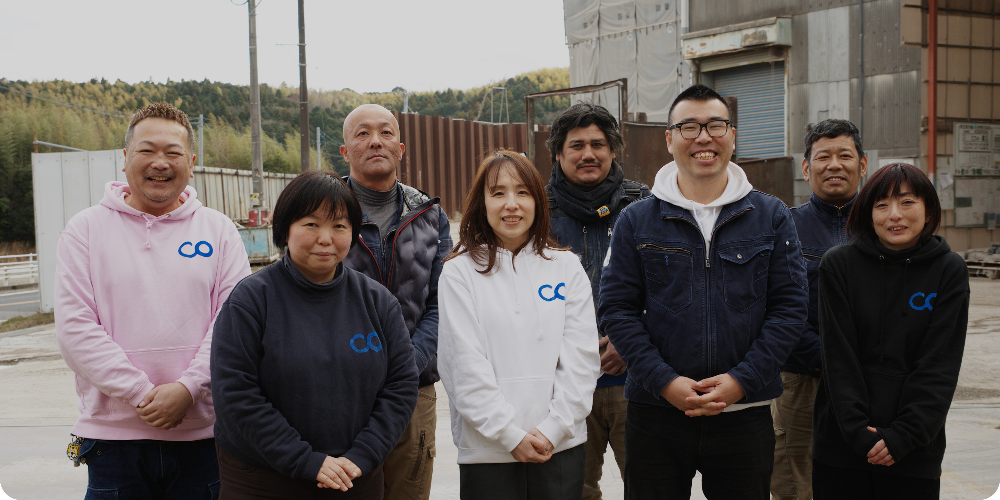
Transforming the Norms of the Demolition and Industrial Waste Industry
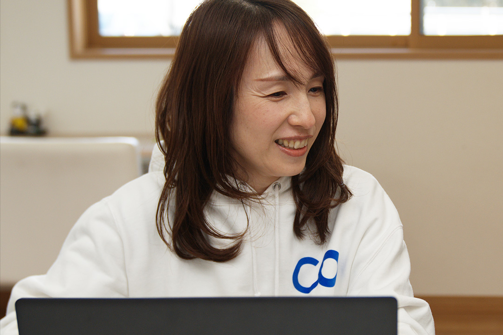
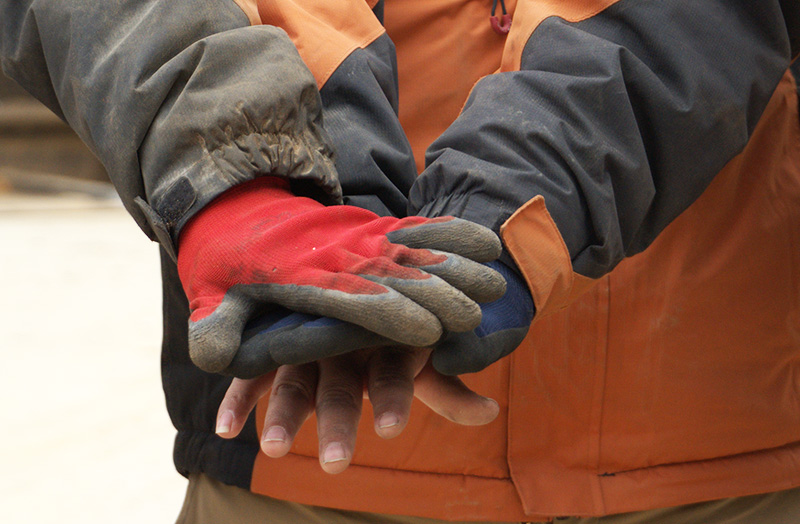
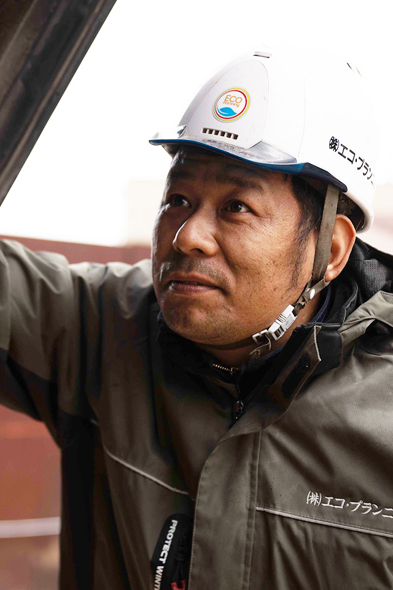
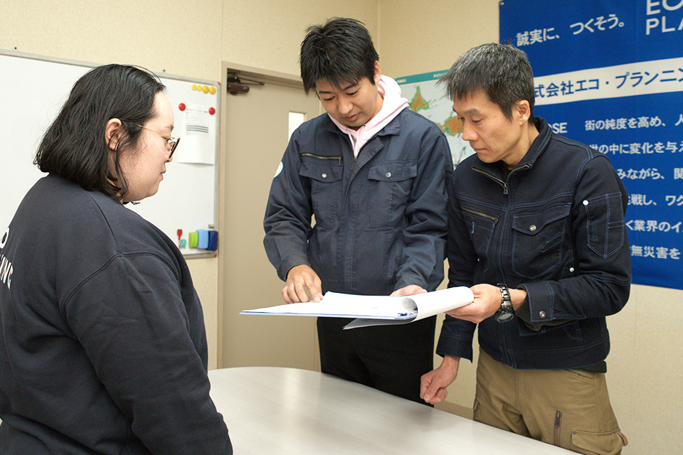
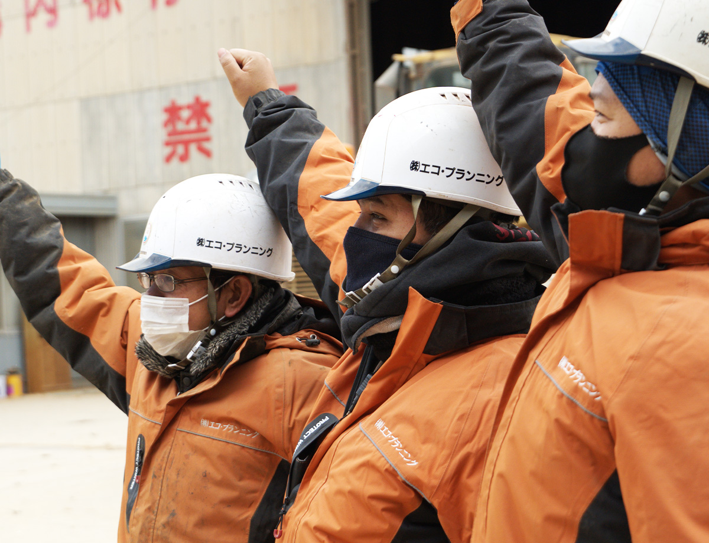
社風・文化

ヘアスタイルも服装も、お気に入りのスニーカーも、自由に❝らしさ❞を出して全然OK。形よりも「自分らしく」働ける環境を大事にしています。服選びが面倒な時は、パーカーやTシャツなどのオリジナルユニフォーム支給があるのでご安心を。

ペルーやベトナム、インドネシアなど多国籍なメンバーが活躍中！文化の壁を越えた交流が当たり前の風景です。気さくな仲間ばかりなので、毎日良い刺激をもらいながら楽しく働けるのが魅力です。
有休や早退も「私用で！」と気兼ねなく言える雰囲気。残業は少なめで副業も自由です。自分の人生をしっかり楽しみながら、無理なくキャリアを築ける環境をしっかり整えています。
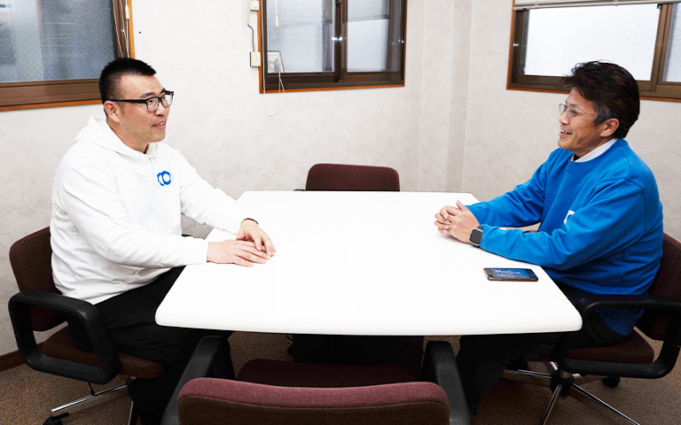
役職を気にせず、上司とも冗談を言い合えるほどフラット。会社持ちの食事会や差し入れのおやつを囲んで、新人さんもすぐに打ち解けられる。そんな気さくな雰囲気が自慢です。
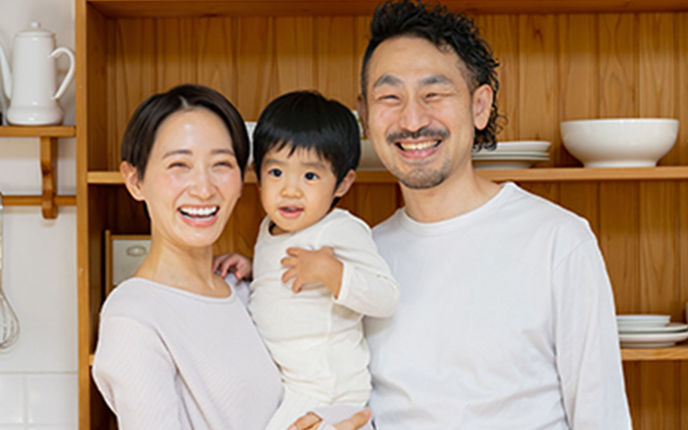
本人だけでなく、配偶者の誕生日にもギフト券を贈るのがエコ流。GWやお盆、年末年始などの大型連休もしっかり休めます。社員だけでなく、その先の大切な人まで大切にしたいと考えている会社です。
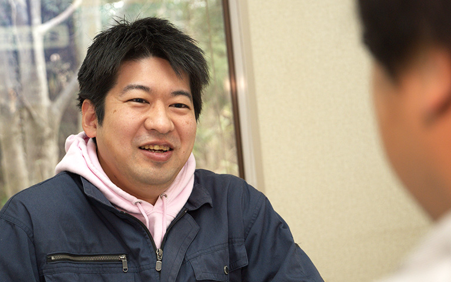
資格取得の支援はもちろん、誰でもプロジェクトのリーダーになれる文化。年次に関係なく意見を出せるので、自分の手で会社を面白くしていく手応えを存分に味わえるのが醍醐味です。
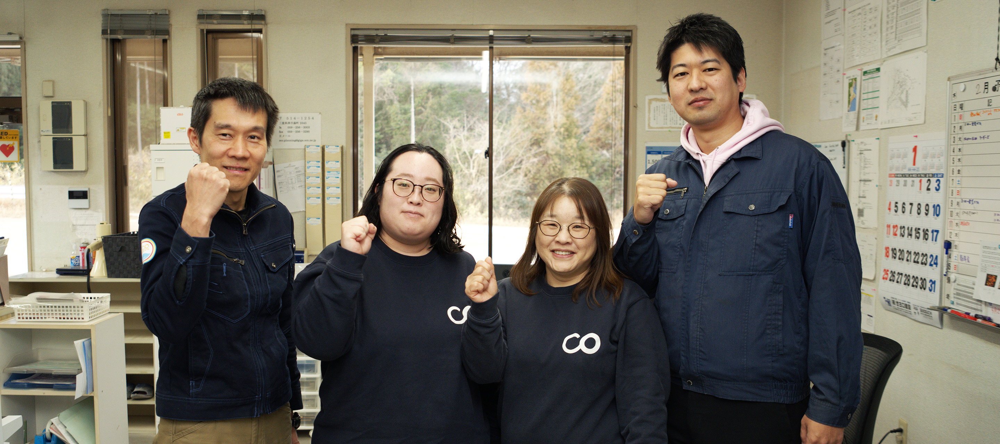
求める人物像
We Welcome The Diversity.
年齢、国籍、見た目のこだわり。私たちは全ての個性を尊重します。
多様な感性が混ざり合うことで、常識を越えた発想が生まれ、仲間も
お客様も笑顔になれるからです。
業界のイメージ（3K）を「新3K（かっこいい・稼げる・感動）」へ塗り替えるというビジョンに共感し、挑戦を楽しめる方を求めています。
エコ・プランニングには広告・アパレル・飲食など、解体・産廃業界とは全く異なるバックグラウンドを持った社員も多く在籍しています。これまで培った感性を活かして、新しいスタンダードを創りたい人が躍動できる環境です。
一つの物事に固執せず、周りや未来を見渡せる広い視野を持って、柔軟なアイデアを出せることが重要です。
過去の経験のみに固執せず、アドバイスや現状をありのままに受け入れて、新しいことを吸収できる「素直さ」「謙虚さ」を持った方が多く活躍しています。
「ルール通りにやるのは面白くない」という考えに基づき、ゼロから新しいものを生み出す楽しさを持った方を歓迎します。
「100%を待つのではなく、6割でいいからまずやってみる」というスピード感が社風であり、フットワーク軽く一歩を踏み出せる方が活躍しています。
上司や社長に対しても、納得がいかないことや自分の考えを正直に伝え、対話を通じて解決しようとする姿勢が尊重されます。
福利厚生
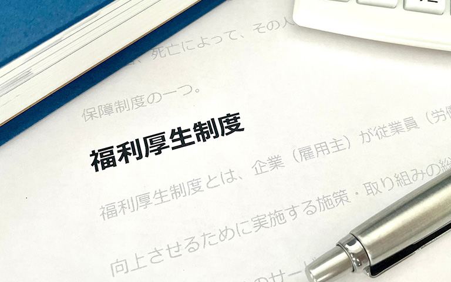
健康保険や厚生年金など、社会保険を完備。万が一の時も本人や家族をしっかり守り、安心して長く働ける環境を当たり前に整えています。
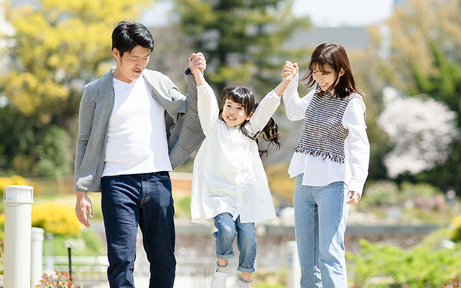
「私用で休みます」が普通に言える文化。家族の行事や趣味など、あなたの人生を大切にしてほしいから、取得を積極的に推奨しています。
業務に必要な資格の取得費用は会社が全額サポート。あなたの「もっと成長したい」という向上心を、資金面から全力でバックアップします。
長く貢献してくれる社員の将来を守るための制度です。安心して腰を据えてキャリアを築けるよう、社内規定に基づき退職金を支給しています。
本人だけでなく配偶者の誕生日にもギフト券を贈呈！大切な人を大切にしてほしいという想いから生まれた、当社独自の温かな制度です。
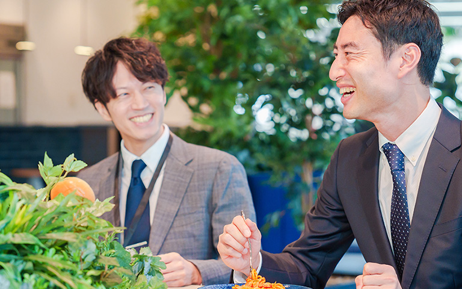
仲間との食事会や懇親会の費用を会社が補助。美味しいものを囲み、役職の壁なくフラットに笑い合える時間を会社がサポートしています。
頑張った分は手当としてしっかり還元。通勤にかかる費用も実費でお支払いします。クリーンで嘘のない、誠実な労働環境を徹底しています。
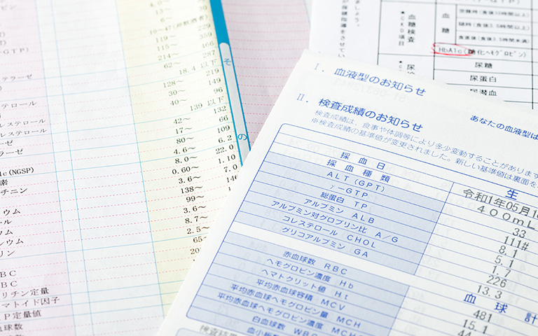
1年に1回、全従業員の健康診断を実施しています。体が資本の仕事だからこそ、日々の健康維持と安心を会社がしっかり支える仕組みです。
知人を紹介して入社が決まった場合に報奨金を支給。「大切な人を誘いたくなる会社」であることを、社員への還元という形で表しています。
上記以外に新福利厚生をいろいろ拡充準備中でして、今月中には運用開始予定です。決まり次第報告しますので反映させてほしいです。
募集要項
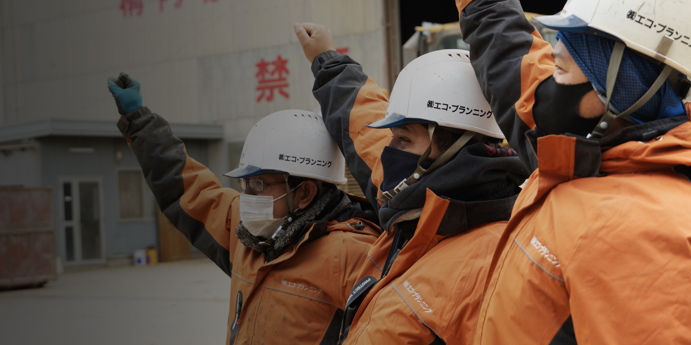